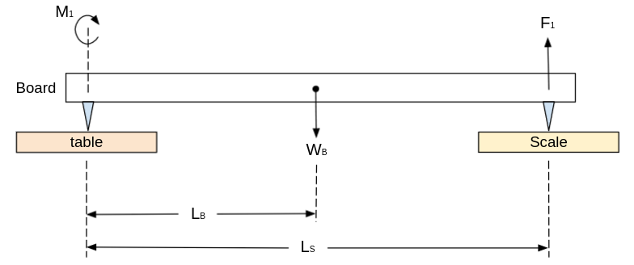
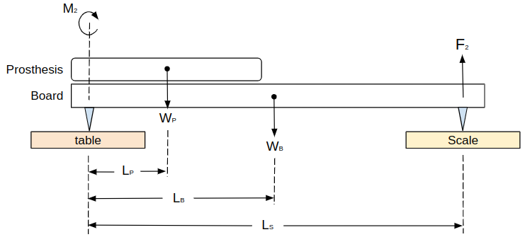
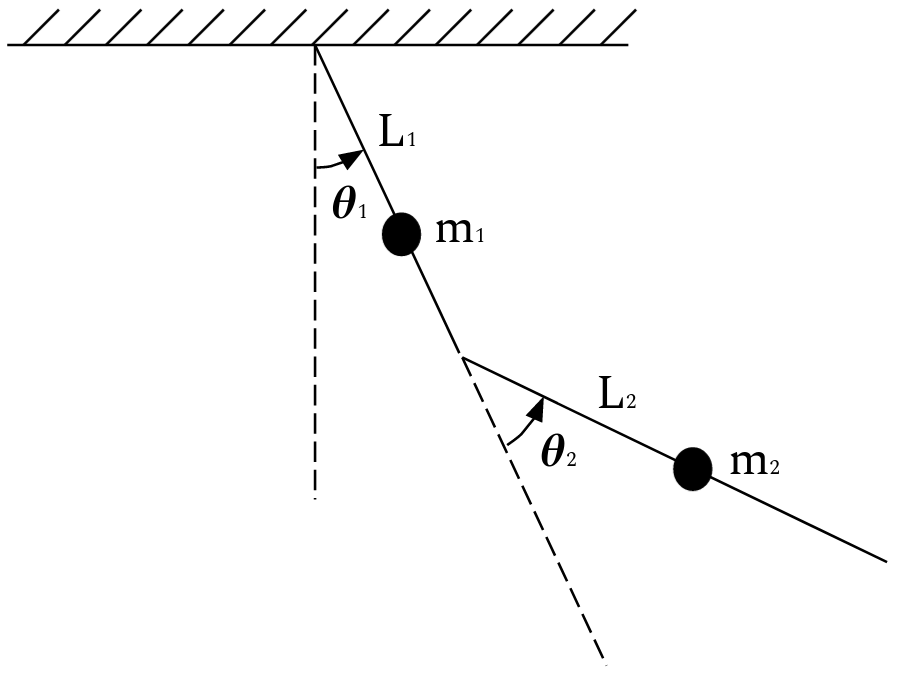
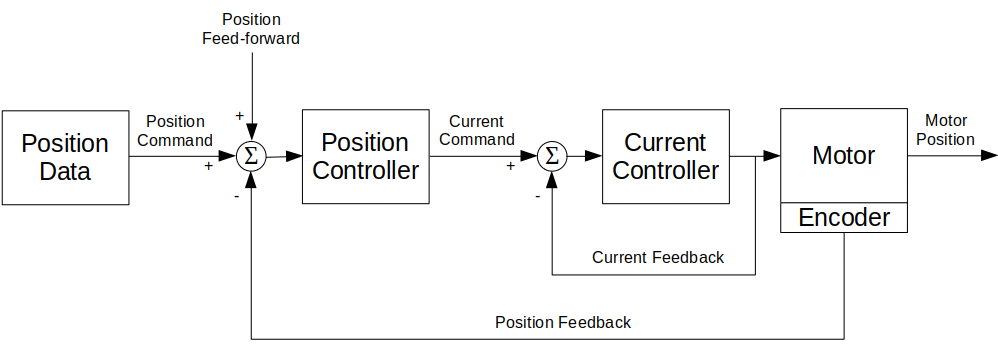
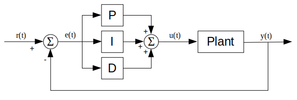
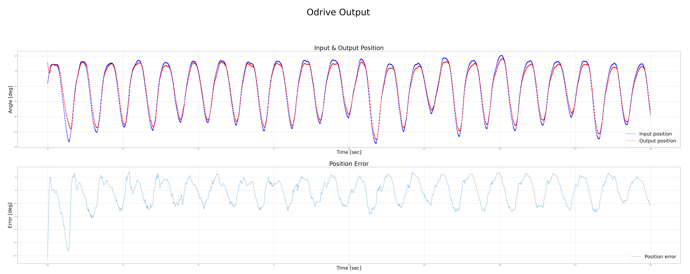
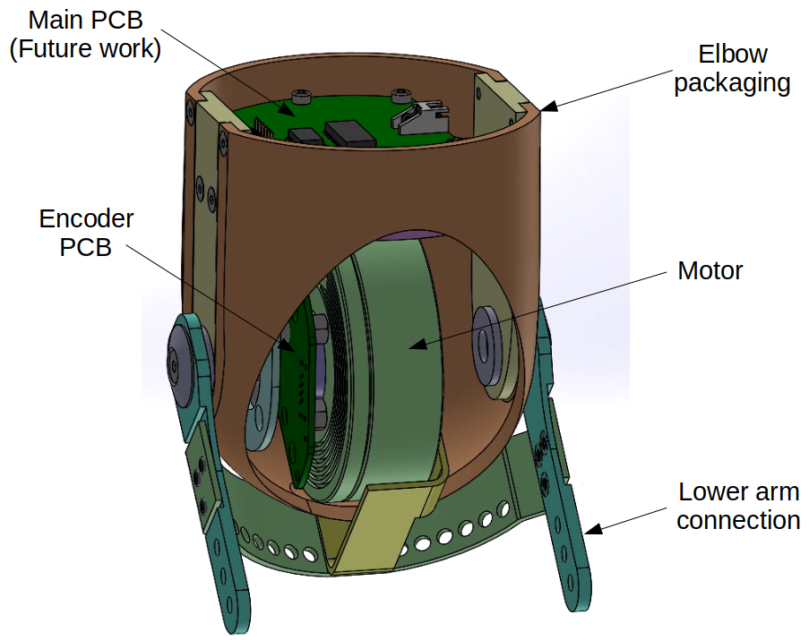
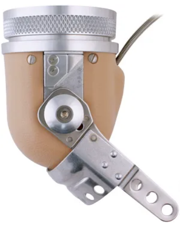

Motorized Prosthetic Arm
Python | C | Biomechanics | Human Movement Analysis | Mechatronics | PID Control
April 2020 - December 2021
Description
In this project, I designed, built, and controlled a motorized prosthetic elbow that imitates healthy arm motion to help amputees prevent falling, avoid injuries, and maintain balance while walking. According to Kent and Major's research$^{[1]}$, asymmetries in body mass and motion affect the regulation of whole-body angular momentum in individuals with upper limb absence and may increase fall risk.
To better predict the arm-body motion, I analyzed arm movement data patterns, simulated full arm dynamics, and found the relation between walking speed to the angular velocity of the arm.
Take a look at the project on my GitHub page.

Motorized prosthetic elbow
Project Overview
This project contained 4 parts:
- Data collection
- Arm motion analysis and modeling
- Motor control to achieve the desired arm motion
- Mechanical design of the prosthetic elbow
Data collection
In the data collection part of the project, I focused mainly on measuring prosthetics characteristics and collecting body-arm motion data.
Prosthetics Measurements
To get the size and mass of an average prosthesis, I measured more than 20 different prosthetic arms. To find the center of mass (COM) location, I used a center-of-mass estimation system$^{[1]}$. The system consisted of a wooden board with nails on both sides and a digital scale. One side of the board was located on the scale, and the other side was located on a leveled table.
In the first step, I measured the center of mass of the wooden board:

The free-body diagram used to calculate the COM of the prosthesis
The COM of the board can be derived from the Torque Equilibrium equation of the system above: $$ \sum M_1 = F_1 \cdot L_S - W_B \cdot L_B = 0 $$ $$ L_B = \frac{F_1 \cdot L_S}{W_B} $$ Where $ W_B = m_B g $ is the weight of the board.
Similarly, the COM of a prosthesis can be found by locating it above the wooden board and examining the change Torque Equilibrium equation, as described in the following image:

The free-body diagram used to calculate the COM of the wooden board
We can derive the COM of the prosthesis from the Torque Equilibrium equation of the updated system above: $$ \sum M_2 = F_2 \cdot L_S + W_P \cdot L_P - W_B \cdot L_B = 0 $$ $$ L_P = \frac{F_2 \cdot L_S - W_B \cdot L_B}{W_P} $$
Body-Arm Motion Measurements
To explore the body-arm motion while walking, and to find the correlation between walking speed and arm swing, I attached accelerometers to my lower back, upper arm, and forearm, and measured the angles, velocities, and accelerations. An example of the results are presented in the following video:

Accelerometer sensors - back, shoulder, and elbow accelerations
I used the collected data to model the arm motion in the next section of the project.
Modeling a human arm as a double pendulum
To Better understand the motion of a human arm and find a suitable motor to imitate the elbow motion, I modeled the arm as a double pendulum system. I used the system Lagrangian and measured shoulder and elbow angles to find the motion equations and extract the required elbow torque.
The double pendulum can be described using the following system sketch, where the masses are located in the center of mass of every link:

Modeling the arm as a double pendulum - system sketch
The kinetic and potential energy of the system is as follows: $$ KE = \frac{1}{2} \cdot m_1 \cdot (\dot{x_1}^2 + \dot{y_1}^2) + \frac{1}{2} \cdot m_2 \cdot (\dot{x_2}^2 + \dot{y_2}^2) $$ $$ PE = m_1 \cdot g \cdot y1 + m_2 \cdot g \cdot y_2 $$ where $m_1$ and $m_2$ are the masses of the upper arm and the forearm (respectively), $R_1$ and $R_2$ are the distance from the joint to the center of mass of the upper arm and the forearm (respectively), $g$ is the gravity constant, and: $$ x_1 = R_1 \cdot sin(\theta_1) $$ $$ y_1 = -R_1 \cdot cos(\theta_1) $$ $$ x_2 = R_1 \cdot sin(\theta_1) + R_2 \cdot sin(\theta_1 + \theta_2) $$ $$ y_2 = -R_1 \cdot cos(\theta_1) - R_2 \cdot cos(\theta_1 + \theta_2) $$
The Lagrangian is the difference between the two energies: $$ L(t) = KE - PE $$
The Euler-Lagrange equation, the connection between the joints torque to the joints angles, can be computed using the following equation: $$ \tau_i(t) = \biggl(\frac{\partial L}{\partial \theta_i'}\biggr)' - \frac{\partial L}{\partial \theta_i} $$ where $i$ is the joint number.
Plugging in the measured angles returns the torque as a function of time. After scanning the maximum torque and velocity over all trials, I could find the maximum requirements for the motor.
The following video shows an animation of the arm motion, represented as a double pendulum:
Modeling the arm as a double pendulum - system animation
Motor control
To control the motor, I used a 2 layer control system - feedback current and position control. The current was controlled by the ODrive's controller, and the position was controlled by a feedback PID controller (with an optional feedforward component).
The control system diagram:

Control system diagram
The PID position control diagram:

PID controller diagram
An example of motor position control using the PID controller. The blue plot is the input angles, the red plot is the controlled output angles, and the second graph is the error changing with time:

Motorized prosthetic elbow

Position control input (blue), output (red), and position error
After tunning the controller, I reached the maximum error goal of 5% from the maximum angle.
The results of the motor control for different walking speed:

walking speed $ 0.6 \frac{m}{s} $

walking speed $ 0.8 \frac{m}{s} $

walking speed $ 1.0 \frac{m}{s} $

walking speed $ 1.2 \frac{m}{s} $
Mechanical design
The system contained several key parts:
- Motor (T-Motor, R60 KV115)
- Encoder PCB (Designed for a Magnetic Rotary Encoder (AS5048A))
- Driver (ODrive V3.6, 24V)
- Odrive Adaptor PCB (Adaptor from ODrive connector to ethernet connector)
- Elbow packaging (based on Fillauer E-400)
- Battery

The mechanical design of the device
The mechanical design was based on Fillauer's E-400 prosthetic elbow design:

Fillauer E-400 prosthetic elbow
All 3D CAD files can be found here, and all circuit board schematics and manufacture files can be found here.
Future Work
- Test the system on patients with above-elbow amputees.
- Replace the ODrive with a smaller PCB, that will be installed in the elbow module. The PCB will contain
a microprocessor, motor driver, current sensor, etc., to replace the ODrive's functionality.
A preliminary design of such PCB can be found here.
References
[1] Kent JA, Major MJ. Asymmetry of mass and motion affects the regulation of whole-body angular momentum in individuals with upper limb absence, Clin Biomech (Bristol, Avon). 2020 Jun;76:105015
[2] Major MJ. Fall Prevalence and Contributors to the Likelihood of Falling in Persons With Upper Limb Loss. Phys Ther. 2019 Apr 1;99(4):377-387
[3] Major MJ, McConn SM, Zavaleta JL, Stine R, Gard SA. Effects of upper limb loss and prosthesis use on proactive mechanisms of locomotor stability. J Electromyogr Kinesiol. 2019 Oct;48:145-151
[4] McConn SM. Prosthetic influence on gait stability in individuals with upper limb loss. Master's Thesis, Biomedical Engineering, Northwestern University. 2016 Jun